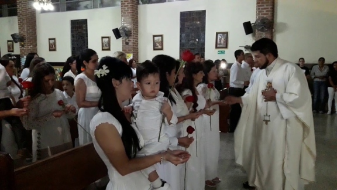
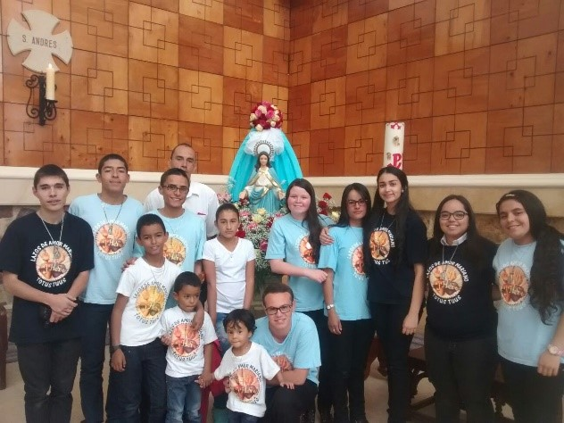
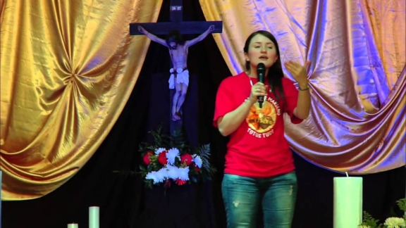

Consagraciones
La preparación para la Consagración Total a Jesús por María se dicta todos los días lunes a las 7:30pm en la casa de Lazos de Amor Mariano, ubicada en Av. del Tejar, Cuenca 010215.

Hogar Mariano
Todos los martes a las 7:30pm en la casa de Lazos de Amor Mariano, ubicada en Av. del Tejar, Cuenca 010215.

San Lorenzo & Escuelita de María
Todos los miércoles a las 7:30pm en la cada de Lazos de Amor Mariano, ubicada en Av. del Tejar, Cuenca 010215.
donde se capacita al misionero en diferentes aspectos, como Sagradas Escrituras, Virgen María, Apologética, Moral,etc.
Esta formación está fundamentada en la Palabra de Dios a la luz del Magisterio de la Iglesia, en el Catecismo de la Iglesia Católica.
Grupo de Oración
Todos los viernes a las 7:30pm en la cada de Lazos de Amor MARIANO, ubicada en Av. del Tejar, Cuenca 010215.
